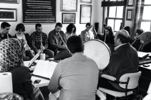
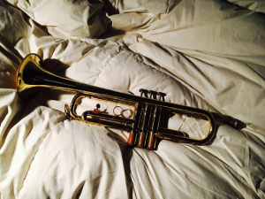

Música

Bienvenidos a la Academia de Artes IMA, donde la pasión por la música se combina con una educación de calidad para formar a los músicos del futuro. Nuestra academia ofrece una disciplina de música excepcional que se enfoca en una variedad de instrumentos, incluyendo la guitarra, el violín, el piano, la flauta, el arpa, el bajo eléctrico y la guitarra eléctrica. Aquí, te proporcionamos un vistazo a lo que necesitarás y las materias que generalmente se imparten en nuestra academia.
Plan de estudio
- Teoría Musical: Aprenderás los fundamentos de la notación musical, lectura de partituras, intervalos, escalas y armonía.
- Práctica de Instrumento: Clases individuales centradas en el instrumento de elección para desarrollar habilidades técnicas y expresivas.
- Ensamble Musical: Participa en grupos musicales para aprender a tocar en conjunto y perfeccionar tus habilidades de colaboración.
- Composición y Arreglos: Crea música original y adapta piezas musicales existentes.
- Historia de la Música: Explora la evolución de la música a lo largo de la historia, estudiando diferentes estilos y compositores.
- Apreciación Musical: Desarrolla la capacidad de escuchar y analizar música de manera crítica.
- Tecnología Musical: Aprende a utilizar software y equipos de grabación y producción musical.
- Educación Auditiva y Solfeo: Mejora tus habilidades auditivas y tu lectura musical.
- Actuación en Vivo: Prepárate y ejecuta presentaciones en vivo para ganar experiencia en el escenario.
- Ética Musical: Comprende las consideraciones éticas y legales en la industria de la música.
En el Instituto de Artes IMA, estamos comprometidos a ayudarte a alcanzar tus metas musicales, ya sea que sueñes con ser un virtuoso del violín, un maestro del piano o un legendario guitarrista de rock. Nuestro enfoque educativo integral y nuestros recursos de alta calidad te prepararán para una carrera exitosa en el mundo de la música.

Materiales
- Guitarra: Para estudiar guitarra en el Academia IMA, necesitarás tu propia guitarra acústica o eléctrica, un afinador, un metrónomo, cuerdas de repuesto y una púa.
- Violín: Para los amantes del violín, requerirás un violín de buena calidad, un arco, una resina para el arco, un estuche rígido y un soporte.
- Piano: Los estudiantes de piano pueden utilizar un piano acústico o un teclado digital con 88 teclas, un soporte para teclado, y opcionalmente, auriculares para práctica silenciosa.
- Flauta: Estudiar flauta requerirá una flauta de calidad, un estuche, un pañuelo para limpiar y aceite para mantenimiento.
- Arpa: Los apasionados por el arpa necesitarán un arpa, una llave de afinación, un banco ajustable y partituras de arpa.
- Bajo Eléctrico: Para los bajistas, un bajo eléctrico, un amplificador, cuerdas de repuesto, una púa y una correa son esenciales.
- Guitarra Eléctrica: Los estudiantes de guitarra eléctrica necesitarán una guitarra eléctrica, un amplificador, cuerdas de repuesto, una púa y, opcionalmente, efectos de guitarra.
Nuestro enfoque educativo integral y nuestros recursos de alta calidad te prepararán para una carrera exitosa en el mundo de la música. ¡Únete a nosotros y desbloquea tu potencial musical!
